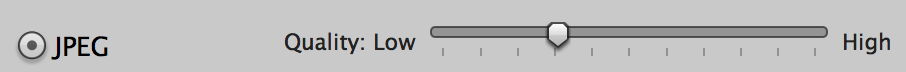
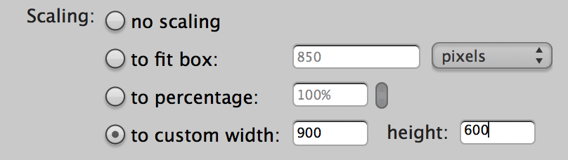
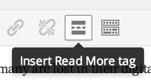
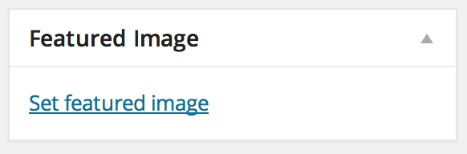

Image sizing
Resize images to fit 900x600px on the longest edge, saved at JPG quality 6.
 
Read more links
Insert a Read More tag to display the rest of a post after the jump.

Featured image
To display an image above the post title, set it as the post's Featured Image.
